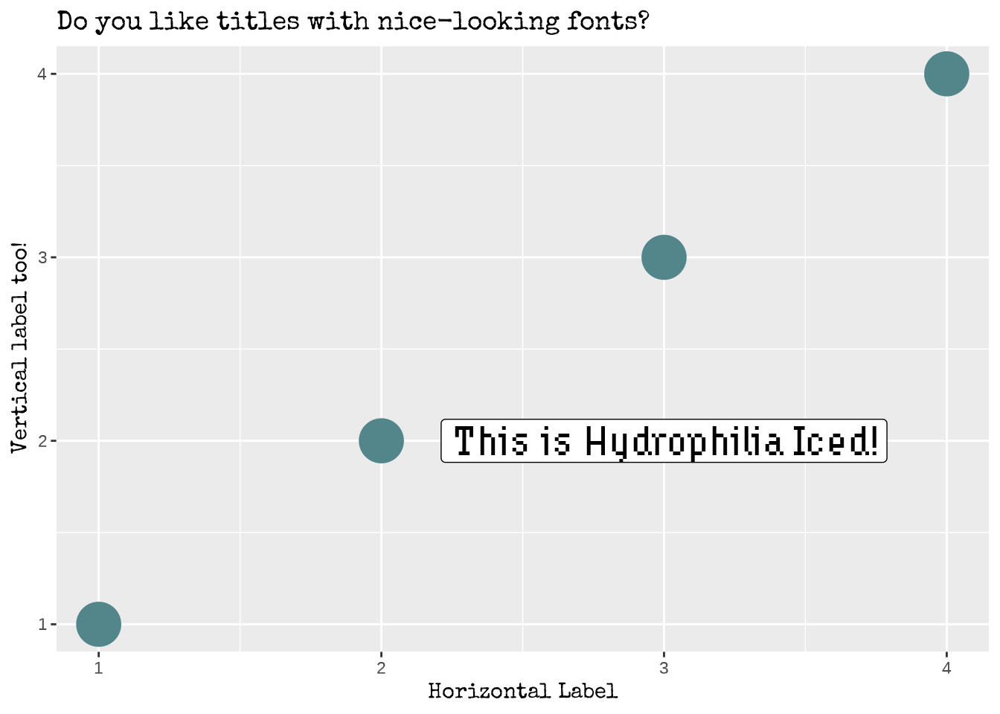
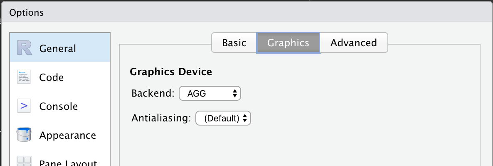
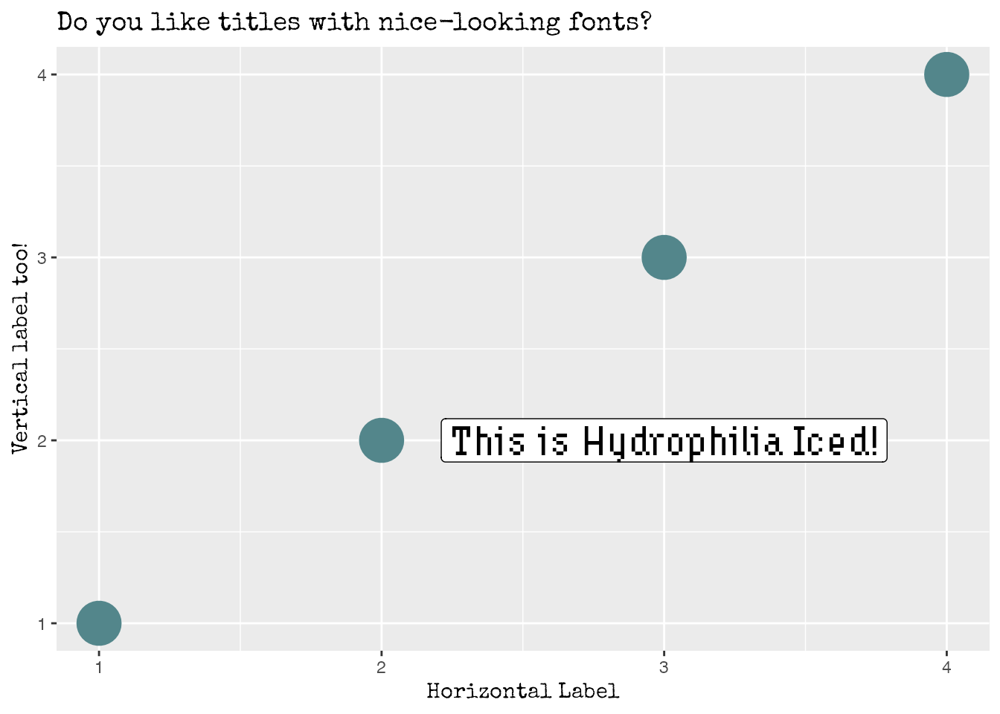

Custom fonts with showtext
The easiest way to add a custom font is to use
font_add_google(). This function will search the Google
Fonts repository for a specified family name, download the proper font
files, and then add them to sysfonts (an auxiliar package
that makes showtext work). See how simple it is in
practice:
library(showtext)
font_add_google("Special Elite", family = "special")
The second argument, family, is optional. It gives the
family name of the font that will be used in R. In other words, it
means that the name used to refer to the font in R does not need to be
the same than the original name of the font. In this case, the font
Special Elite is going to be the
special family.
note: if the font wanted is not available on Google Fonts,
one can use font_add(). The first argument is like the
family above, and the second argument is a path to the
font file for the font face (both .ttf and
.otf work). Not that you have to download the font
locally and update the path below
font_add("hydrophilia", "~/Downloads/Hydrophilia/HydrophiliaIced-Regular.ttf")
And last but not least, showtext_auto() must be called to
indicate that showtext is going to be automatically
invoked to draw text whenever a plot is created.
Now it’s a good time to make a plot to showcase the fonts just
imported and see how they look like.
library(ggplot2)
data <- data.frame(x = 1:4, y = 1:4)
ggplot(data) +
geom_point(aes(x, y), size = 10, color = "cadetblue4") +
geom_label(
aes(x, y),
data = data.frame(x = 3, y = 2),
label = "This is Hydrophilia Iced!",
family = "hydrophilia", # Use Hydrophilia Iced for the label,
size = 7
) +
labs(
x = "Horizontal Label",
y = "Vertical label too!",
title = "Do you like titles with nice-looking fonts?"
) +
theme(
# Special Elite for both axis title and plot title
axis.title = element_text(family = "special"),
title = element_text(family = "special")
)

Cool! That worked pretty well!
However, it’s good to note some caveats with
showtext before jumping to the next section:
-
If you are using
showtext in a common R script, set
dpi according to the device you use to export your
figure via showtext_opts(dpi = dpi). For example if you
use ggsave(), then you need to set up a
dpi of 300.
-
If you are using
showtext in RMarkdown documents you
don’t have to use showtext_auto(). That will set up the
wrong dpi and the text will look too small. You need to add
fig.showtext=TRUE to the chunk settings as shown
here.
-
For more information about these issues see
here.
Custom fonts with ragg
This solution provided in this section is quite different from the
solution above. Instead of using a library to install and manage fonts
that are accesible by R, this solution is based on using a different
graphic device provided by ragg.
Among other very nice features, using ragg gives access
to all system fonts, which means that custom fonts can be used without
having to install other package in R.
Assuming RStudio is used to work with R, ragg can be set
up as the graphic back-end to the Rstudio device (for RStudio >=
1.4) by choosing AGG as the backend in the graphics pane in general
options (see screenshot)

Also, ragg can be used with RMarkdown documents.
knitr supports png output from ragg by
setting dev = "ragg_png" in the chunk settings or
globally with knitr::opts_chunk$set(dev = "ragg_png").
Finally, if you are going to export your plot with
ggsave(), you can simply pass device functions from
ragg into the device argument as
ggsave("image.png", device=ragg::agg_png).
In practice, you need to download and install the fonts in your system
manually. This is usually done by opening the font file and clicking
on the install button in the window that pops up. One of its
advantages is that this procedure is required only once per font.
After a font is installed in your system it can be used anywhere in
your R plots without having to use any external packages such as
showtext.
Let’s generate the same plot than above, but using the
ragg::agg_png backend.
# Quick notes:
# * No "showtext_auto()" or similar calls
# * Full names must be used for the fonts because they are now
# searched in the system
data <- data.frame(x = 1:4, y = 1:4)
ggplot(data) +
geom_point(aes(x, y), size = 10, color = "cadetblue4") +
geom_label(
aes(x, y),
data = data.frame(x = 3, y = 2),
label = "This is Hydrophilia Iced!",
family = "Hydrophilia Iced",
size = 7
) +
labs(
x = "Horizontal Label",
y = "Vertical label too!",
title = "Do you like titles with nice-looking fonts?"
) +
theme(
axis.title = element_text(family = "Special Elite"),
title = element_text(family = "Special Elite")
)
